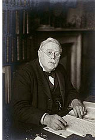

| |
W.K. Loftus excavated
at Warka (Uruk) and Larsa in Mesopotamia in 1850, finding Parthian
slipper coffins at Warka. In 1851 and 1852 he worked at Susa in
Iran, but although he obtained interesting information, by the standards
of the day the results were not spectacular. Loftus was diverted to
Mesopotamia, and in 1854-55 he worked at Warka, Nineveh and Nimrud,
finding a remarkable hoard of ivories in the Burnt Palace at Nimrud.
In 1872, while sorting
through the many tablets from these early excavations, the young assistant
George Smith (1840-76) found an Assyrian account
of the deluge. Such was the public excitement generated that for
the next three seasons (1873-76) Smith was sent to resume excavations
at Nimrud and Nineveh and find more tablets. With remarkably good fortune
he found a tablet that contained a missing part of the flood story,
but he died in 1876 while returning from his third, abortive, expedition.
The Trustees of
the British Museum turned again to Hormuzd Rassam, who accepted the
invitation to reopen excavations in Mesopotamia. His remit was wide,
and between 1878 and 1882 he organised work at a large number of sites
from which many significant additions were made to the Museum's collections.
These included the Cyrus
Cylinder from Babylon, the bronze
gates of Shalmaneser III and Ashurnasirpal II from Balawat, and
a fine collection of Urartian bronzes, which now form the core of the
Anatolian collection.
Rassam collected
around 134,000 cuneiform tablets or fragments in the space of eighteen
months, Rassam himself estimating that he recovered 60-70,000 from Abu
Habbah (Sippar) alone. This should have suited the Museum authorities
well, as their chief interest at this time was to acquire tablets. This
prompted them to send E. A. W. Budge (1857-1934) to Mesopotamia in 1888-9
and 1890-1. By excavation and (mostly) by purchase, Budge acquired a
large number of new tablets, many of them from Dêr. Two more Museum
employees, L. W. King (1869-1919) and R. Campbell Thompson (1876-1941),
continued this intensive collecting of tablets at Nineveh between 1903
and 1905.
With the acquisition
of further cuneiform tablets later in the 20th century, the collection
now numbers around 130,000 registered pieces and many fragments.
1
- 2 - 3 - 4
- 5
2 of 5
|
|

Sir
Ernest Wallis Budge
|
|
|
|